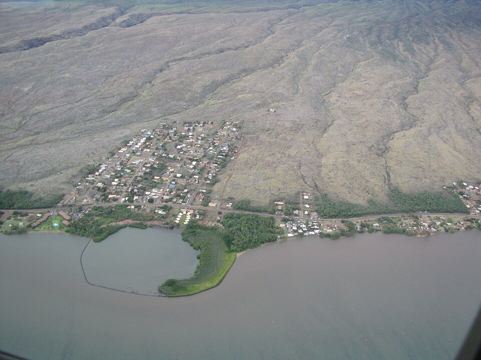

Kamehameha V Highway
Place: Kamehameha V Highway (Route 450), Molokaʻi
Type: State highway / commemorative roadway
Namesake: King Lot Kapuāiwa (Kamehameha V, 1830–1872), fifth monarch of the Hawaiian Kingdom
Story it tells: How a highway along Molokaʻi's southern and eastern coastline preserves the name of a king whose estate, agricultural interests, and policies impacted the island's history.

Kamehameha V Highway stretches along Molokaʻi's southern and eastern coastline, connecting Kaunakakai with the communities of the island's East End and eventually Hālawa Valley. The highway is named for King Lot Kapuāiwa (1830–1872), who ruled the Hawaiian Kingdom as Kamehameha V from 1863 until his death in 1872. Unlike Kamehameha Highway on Oʻahu, which honors his grandfather, Kamehameha I, this roadway commemorates a monarch with very strong personal and economic ties to Molokaʻi.
Lot Kapuāiwa developed a close relationship with Molokaʻi before becoming king. In 1855, he acquired land at Kaunakakai, where he established a country estate known as Mālama, complete with a thatched residence and bathing pool. He frequently visited the island and developed extensive ranching and agricultural interests, employing Rudolph Meyer to help manage his holdings. His activities contributed to the growth of ranching on Molokaʻi, while the Kapuāiwa Coconut Grove, planted near Kaunakakai during the 1860s, remains one of the island's most recognizable landmarks. The grove and the remnants of his Mālama estate preserve a physical connection to the king's presence.
Kamehameha V's legacy on Molokaʻi also includes one of the darker chapters in Hawaiian history. In 1865, he approved the Act to Prevent the Spread of Leprosy, which authorized the forced isolation of people diagnosed with Hansen's disease. The following year, the first patients were sent to the remote Kalaupapa Peninsula, beginning a policy of segregation that separated thousands from their families over the following century. Although the Board of Health selected Kalaupapa as the settlement's location, the policy was established during Kamehameha V's reign and to this day defines how many see and understand Molokaʻi's history.
The coastal route now known as Kamehameha V Highway developed from earlier roads connecting the settlements and agricultural communities of eastern Molokaʻi. Formerly identified as East Molokai Road and once designated Route 45, it eventually became Hawaiʻi Route 450, extending approximately 27 miles from Kaunakakai toward Hālawa. Its name commemorates a king whose personal presence, economic ventures, and government policies left an enduring and complicated legacy on the island.